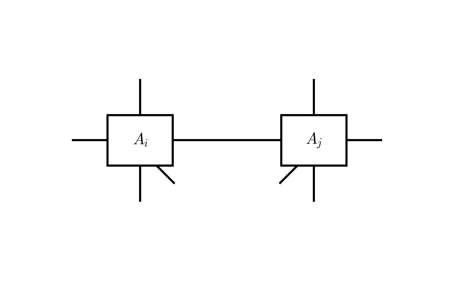

Full Update
The full update (FU) finds the ground state of a local Hamiltonian by performing imaginary-time evolution on the iPEPS, using the full CTMRG environment to optimise the updated tensors [Jordan2008], [Corboz2016].
Imaginary-Time Evolution
A two-body gate \(g_{ij} = e^{-\delta\tau\, h_{ij}}\) (with time step \(\delta\tau\)) is applied to each nearest-neighbour pair. Starting from two neighbouring site tensors \(A_i\) and \(A_j\):
{kind=link}
QR Decomposition
Each site tensor is factorised with a QR decomposition:
This splits each site tensor into an isometric part \(A^Q\) and a smaller reduced tensor \(a^R\). The resulting decomposition of the two-site system is:

Gate Application
The gate \(g_{ij}\) is contracted with the reduced tensors \(a^R_i\) and \(a^R_j\) through their physical indices:

Norm Tensor Construction
The gate-updated tensor \(\Theta\) has an enlarged bond between sites \(i\) and \(j\) that must be compressed back to bond dimension \(D\). In the full update this compression is performed with respect to the full CTMRG environment. The first step is to construct the norm tensor \(N_{ij}\).
\(N_{ij}\) is formed by contracting the converged boundary tensors (\(C^k\), \(E^k\)) with the isometric parts \(A^Q_i\) and \(A^Q_j\) (and their conjugates) over all indices except the shared bond between sites \(i\) and \(j\):

The resulting tensor \(N_{ij}\) is rank-4 with indices \((y, x, Y, X)\), where the lowercase indices correspond to the ket layer and the uppercase indices to the bra layer. It encodes how the environment weights the bond between the two sites.
Positive approximation. Because the environment tensors are approximate, \(N_{ij}\) may not be exactly positive semi-definite. When reshaped to a matrix \(N \in \mathbb{R}^{D^2 \times D^2}\), its eigendecomposition \(N = Z \Lambda Z^\dagger\) may contain small negative eigenvalues. These are regularised by shifting the spectrum:
where \(\lambda_{\min}\) is the smallest eigenvalue. The positive-definite square root \(\tilde{N}\) (satisfying \(\tilde{N}^\dagger \tilde{N} = N\)) is then computed from the corrected eigenvalues.
Gauge fixing. The conditioning of the subsequent ALS can be improved by a gauge transformation [Phien2015]. QR decompositions of \(\tilde{N}\) along the \(y\) and \(x\) legs yield triangular factors \(R_y\) and \(R_x\). Their pseudo-inverses are applied to transform \(\tilde{N}\) into a better-conditioned form:
and the gate-updated tensor \(\Theta\) is correspondingly transformed using \(R_x\) and \(R_y\). After the ALS solve, the inverse transformations are applied to recover the original gauge.
ALS Solution
With the norm tensor \(N_{ij}\) (and optionally gauge-fixed \(\Theta\)) in hand, the compression is cast as a least-squares problem:
where the norm is defined by \(N_{ij}\). Expanding the squared norm gives a cost function:
This is solved by alternating least squares (ALS): fix one reduced tensor and solve a linear system for the other, then alternate.
Fixing \(a^R_j\) and solving for \(a^R_i\). Contracting \(N_{ij}\) with \(a^R_j\) and \(\overline{a^R_j}\) over the indices belonging to site \(j\) produces the effective norm \(R_i\). Contracting \(N_{ij}\,\Theta\) with \(\overline{a^R_j}\) in the same way produces the source tensor \(S_i\). The optimal \(a^R_i\) then satisfies the linear system:
The same procedure applies when fixing \(a^R_i\) and solving for \(a^R_j\).
Regularisation. The effective norm \(R_i\) is symmetrised and regularised before solving:
The system is then solved via Cholesky decomposition when \(R_i\) is well-conditioned, or via the pseudo-inverse otherwise.
Convergence. The ALS iteration alternates between solving for \(a^R_i\) and \(a^R_j\) until the relative change in the cost function falls below a tolerance \(\delta\):
Reassembly
After ALS convergence, a final QR-SVD step balances the bond distribution between the two reduced tensors. Each tensor is QR-decomposed along its bond leg, and an SVD of the product of the two R-factors determines the optimal split. The full site tensors are then reassembled:
Fast Full Update
The fast full update (FFU) variant [Phien2015] exploits the QR structure to reduce the size of the effective norm tensor. Instead of forming \(N_{ij}\) with the full environment and then contracting with \(A^Q\), the isometric parts are absorbed into the boundary tensors first, yielding a smaller effective norm whose dimensions depend on the QR bond dimensions rather than the environment bond dimension \(\chi\). This makes each ALS iteration substantially faster while maintaining the same accuracy as the standard full update.
References
Corboz, Variational optimization with infinite projected entangled-pair states, Phys. Rev. B 94, 035133 (2016).